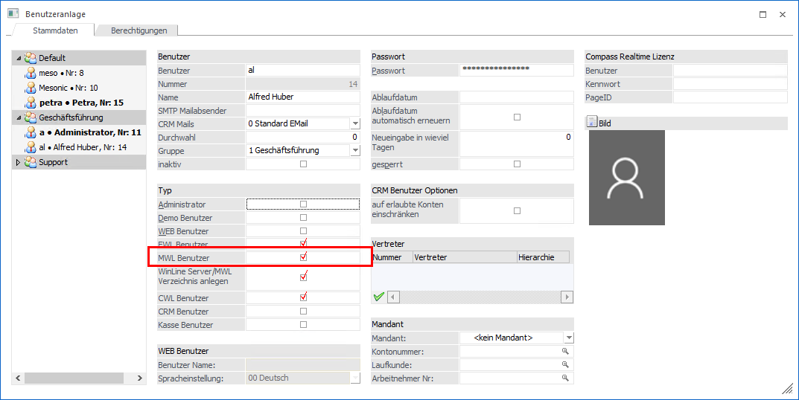

Um einem Benutzer einen Zugang zur WinLine mobile zu ermöglichen, ist dieser als WinLine mobile-Benutzer einzurichten.
Im Admin der WinLine ist die Benutzeranlage über
1 Benutzer
1 Benutzeranlage
zu öffnen, den Benutzer im Register "Stammdaten" zu selektieren und bei "MWL Benutzer" einen Haken zu setzen. Nach dem Abspeichern mit dem OK-Button hat dieser Benutzer Zugriff auf die WinLine mobile.
